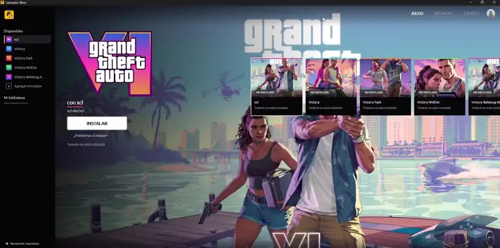
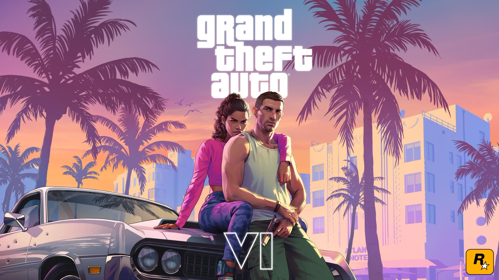
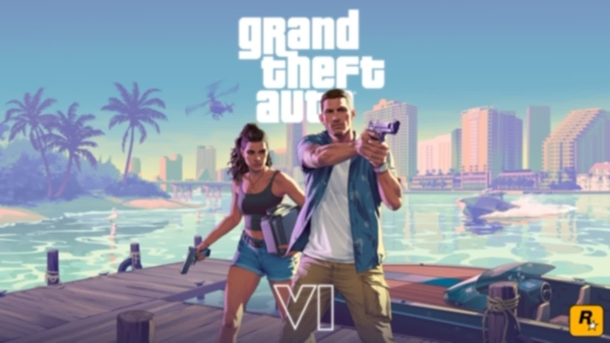
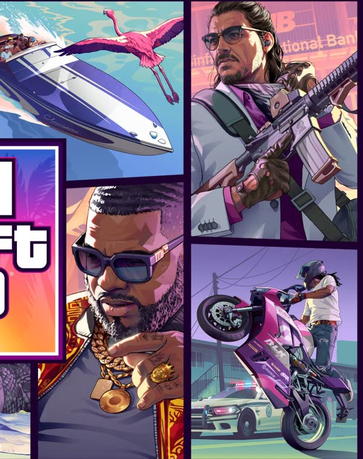
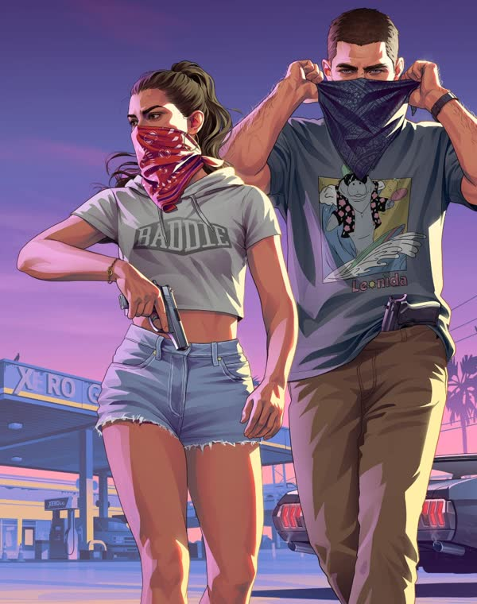
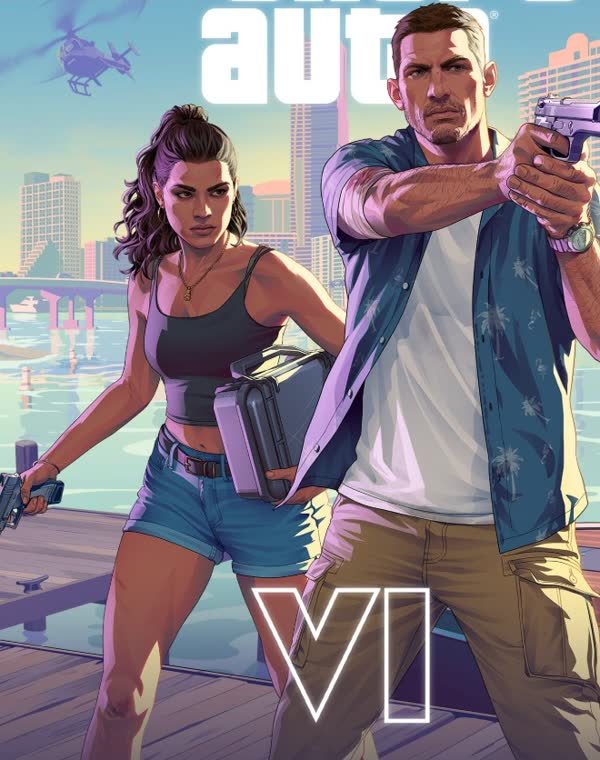
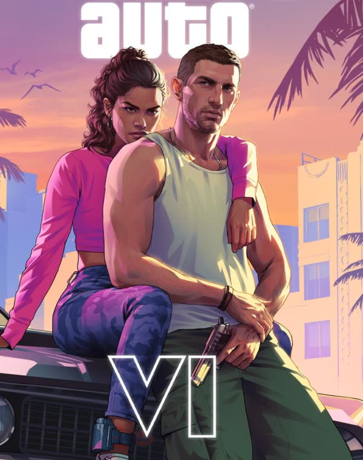

Video, 57 segundos
De la lista de emuladores al juego en marcha
Pulsa para ver el video completo.

Lanzador Xbox para Windows v0.3.0
Descarga, compila, actualiza y abre xcl y las versiones de VIctory por ti. Encuentra el juego en tu PC y se usa en 5 idiomas.
Gratis y de código abierto. Instalador de 7,9 MB. ¿Prefieres sin instalar? Descarga el ZIP portable.
Eliges un emulador a la izquierda, pulsas JUGAR y el lanzador se encarga del resto.

Cuatro vienen incluidos. Cada uno se descarga de su repositorio original en GitHub.




¿Usas otra versión? Con + Agregar emulador pegas la dirección de GitHub de cualquier fork de VIctory o xcl y el lanzador la instala, la actualiza y la abre como a las demás.
Busca la carpeta del juego en tu PC y reconoce los emuladores que ya hayas descargado, para no bajarlos dos veces.
Revisa si tienes Rust, las Build Tools de Visual Studio y el Windows SDK, y te ayuda a instalarlos.
Te muestra cuántos cambios nuevos tiene cada emulador y los aplica con un clic, sin pisar los tuyos.
Agrega cualquier versión basada en VIctory o xcl con su dirección de GitHub y una rama opcional.
Español, inglés, portugués, francés y ruso. Elige el de Windows solo o cámbialo en Ajustes.
No pide registro, no envía datos y no necesita permisos de administrador. Solo habla con GitHub.
Necesitas tu propia copia del juego. El lanzador no incluye ninguno.
Descarga el instalador y ábrelo. Si Windows avisa, pulsa «Más información» y «Ejecutar de todas formas».
La primera vez indica dónde está el juego. Si ya lo encontró, solo pulsa CONTINUAR.
Elígelo en la lista y pulsa INSTALAR. Lo descarga de GitHub y lo compila.
Pulsa JUGAR. Para cerrarlo, DETENER.
Algunos antivirus basados en IA marcan el instalador. Son falsos positivos, y puedes comprobarlo tú.
Comprueba que tu descarga es la original con su huella SHA-256 (versión 0.3.0):
LanzadorXbox-Setup-0.3.0.exe
ddaed9f49fba434eaa409c847240667ef6617dfd829f53fce969e379278f6956
LanzadorXbox-v0.3.0.zip
37f05beee614bf86c0b6b1c2f005c6d9cac61f7e5658007c1b1c0dc93132c7b2
En PowerShell: Get-FileHash seguido del nombre del archivo.
No. El lanzador solo instala y abre emuladores. Necesitas tu propia copia del juego.
Nada. Es gratis y de código abierto, con licencia MIT.
Windows 10 u 11 de 64 bits. Para compilar los emuladores hacen falta Rust, las Build Tools de Visual Studio y el Windows SDK; el lanzador revisa si los tienes y te ayuda a instalarlos.
No. Si lo encuentra en tu PC te ofrece USAR ESA COPIA, y al actualizar mezcla los cambios nuevos con los tuyos.
Desde Configuración de Windows, en Aplicaciones, como cualquier otro programa. Si usaste el ZIP, borra la carpeta.
Sí. Abre un issue en GitHub o envía un pull request. Las traducciones y las pruebas con otros forks también ayudan mucho.
Descarga el lanzador, elige un emulador y pulsa JUGAR.